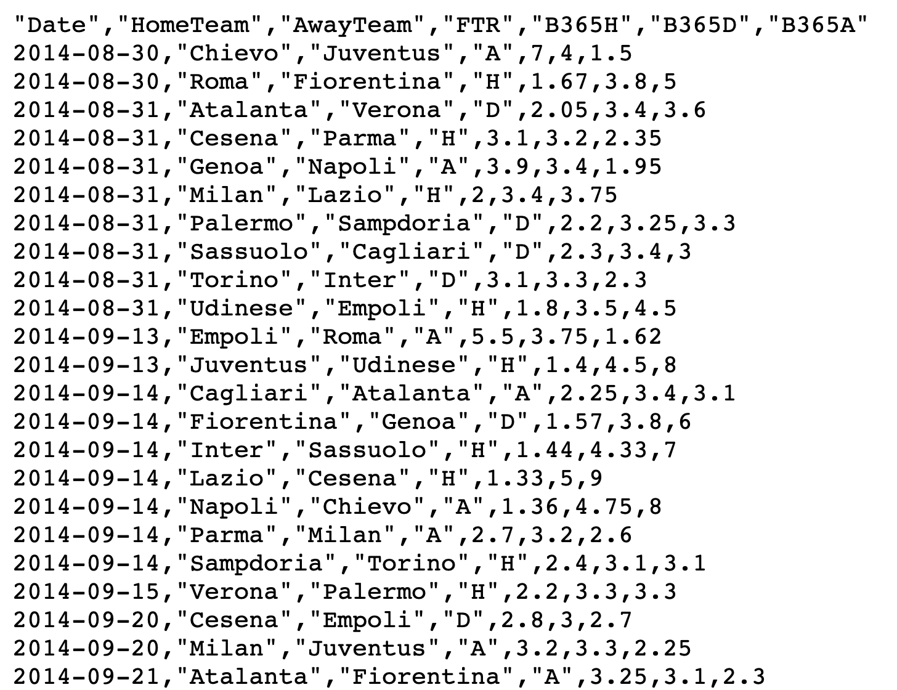

getwd() # Identifica la cartella di lavoro (get working directory)[1] "/Users/tommaso/Library/Mobile Documents/com~apple~CloudDocs/University/Bicocca/Didattica/Laboratorio Statistica/introR/lezioni"Unità C: i data.frames
Tommaso Rigon
data.frameEsercizi R associati disponibili a questo link
data.frameUn oggetto R chiamato data.frame corrisponde alla matrice dei dati.
Ciascuna riga rappresenta quindi un’unità statistica, mentre ciascuna colonna rappresenta invece una variabile.
Un data.frame assomiglia ad una matrice (matrix), ma è pensato per l’analisi dei dati.
Ad esempio, un data.frame può contenere anche valori non numerici, come per esempio le variabili qualitative o valori mancanti.
Come vedremo, il data.frame viene generalmente caricato all’interno di R utilizzando ad esempio la funzione read.table.
Il modo più frequente di caricare un dataset in memoria è importarlo da un file esterno.
Se i dati hanno dimensioni piccole / medie (dimensione file \(<\) 3-4 Gb), sono spesso salvati in formato .csv oppure .txt.
In contesti reali e più complessi, è possibile importare i dati a partire direttamente da database relazionali come SQL.
È sconsigliabile importare i dati in R a partire da un file Excel. Più in generale, ci sono svariate ragioni per evitare Excel se l’obiettivo è condurre una rigorosa analisi dei dati.
Per poter procedere con i prossimi comandi, è necessario scaricare il file calcio.csv e salvarlo nel proprio computer. Link al file.

La sessione di R attiva è aperta in una specifica cartella di lavoro, identificata dal comando getwd.
Ad esempio, la cartella in cui il codice è stato eseguito è la seguente
[1] "/Users/tommaso/Library/Mobile Documents/com~apple~CloudDocs/University/Bicocca/Didattica/Laboratorio Statistica/introR/lezioni"Per aprire il file calcio.csv, bisogna fornire ad R il percorso del file, che dipende da dove questo è stato salvato (sul Desktop, cartella downloads, etc).
È anche possibile cambiare la cartella di lavoro tramite il comando setwd.
In Rstudio, si può usare l’opzione More -> Set as working directory nella finestra Files, selezionando la cartella di interesse.
Una volta identificato il corretto path del file, per importare il dataset in memoria si usa ad esempio il comando read.table. Pertanto:
header = TRUE significa che la prima riga contiene i nomi delle variabili.sep = "," indica che i vari valori di ciascuna variabile sono separati da una virgola.data.frameIn primo luogo, siamo interessati a capire quante variabili e quante osservazioni sono contenute nel dataset data.frame:
Per verificare di non aver commesso errori grossolani nell’importazione del data.frame, possiamo visualizzare le prime \(6\) osservazioni con il comando head:
Date HomeTeam AwayTeam FTR B365H B365D B365A
1 2014-08-30 Chievo Juventus A 7.00 4.0 1.50
2 2014-08-30 Roma Fiorentina H 1.67 3.8 5.00
3 2014-08-31 Atalanta Verona D 2.05 3.4 3.60
4 2014-08-31 Cesena Parma H 3.10 3.2 2.35
5 2014-08-31 Genoa Napoli A 3.90 3.4 1.95
6 2014-08-31 Milan Lazio H 2.00 3.4 3.75Il comando tail può essere usato per mostrare le ultime \(6\) osservazioni:
Date HomeTeam AwayTeam FTR B365H B365D B365A
1895 2011-05-22 Inter Catania H 1.53 3.75 7.00
1896 2011-05-22 Juventus Napoli D 1.90 3.60 3.80
1897 2011-05-22 Lecce Lazio A 6.00 3.60 1.60
1898 2011-05-22 Palermo Chievo A 1.75 3.50 4.75
1899 2011-05-22 Roma Sampdoria H 1.29 5.00 11.00
1900 2011-05-22 Udinese Milan D 3.50 1.53 6.50calcioIl dataset calcio contiene quindi un totale di \(7\) variabili. Ciascuna osservazione è una partita di calcio avvenuta nel campionato di serie A dal 2008 al 2015.
Date indica la data della partita.HomeTeam, AwayTeam indicano la squadra che ha giocato in casa ed in trasferta, rispettivamente.FTR (“Full Time Result”) indica se la partita è stata vinta dalla squadra di casa (H), dalla squadra in trasferta (A), o si è conclusa con un pareggio (D).B365H, B365D e B365A, indicano le quote della compagnia di scommesse Bet365 Group Ltd relative ai 3 eventi, prima dell’inizio della partita.In un dataset sono presenti diverse tipologie di variabili.
Le variabili quantitative discrete e continue in R sono codificate come oggetti di tipo integer e numeric, rispettivamente.
Le variabili qualitative in R sono codificate come oggetti di tipo character oppure di tipo factor; la differenza tra queste tipologie verrà chiarita nelle prossime slides.
Infine, le date in R si codificano con la tipologia Date.
R non sempre riconosce correttamente la tipologia di variabili, come evidenziato dal comando str, che fornisce un sommario del data.frame.
'data.frame': 1900 obs. of 7 variables:
$ Date : chr "2014-08-30" "2014-08-30" "2014-08-31" "2014-08-31" ...
$ HomeTeam: chr "Chievo" "Roma" "Atalanta" "Cesena" ...
$ AwayTeam: chr "Juventus" "Fiorentina" "Verona" "Parma" ...
$ FTR : chr "A" "H" "D" "H" ...
$ B365H : num 7 1.67 2.05 3.1 3.9 2 2.2 2.3 3.1 1.8 ...
$ B365D : num 4 3.8 3.4 3.2 3.4 3.4 3.25 3.4 3.3 3.5 ...
$ B365A : num 1.5 5 3.6 2.35 1.95 3.75 3.3 3 2.3 4.5 ...Per estrarre una variabile da un data.frame si procede come nel caso delle liste, ovvero tramite il simbolo $. Le variabili possono essere salvate con un nome a piacere.
Una variabile numerica è un vettore R a tutti gli effetti, pertanto possiamo applicare le funzioni che abbiamo già incontrato finora
Le analisi descrittive di una variabile numerica verranno affrontate nelle unità successive, per ora ci limitiamo alla manipolazione del data.frame.
Le variabili di tipo character sono appropriate per le stringhe di testo, ovvero se ciascun campo corrisponde ad un breve testo, come ad esempio un Tweet.
Le variabili qualitative con valori ripetuti vanno invece codificate come factor.
Dobbiamo quindi convertire le \(3\) variabili HomeTeam, AwayTeam e FTR come segue:
In primo luogo, verifichiamo che la conversione sia avvenuta correttamente ed esploriamone il contenuto della variabile HomeTeam:
Nelle variabili di tipo factor sono pertanto elencate le varie modalità, chiamati levels in R.
Per accedere alle modalità si usa il comando levels, che elenca le modalità della variabile considerata in ordine alfabetico:
[1] "Atalanta" "Bari" "Bologna" "Brescia" "Cagliari"
[6] "Catania" "Cesena" "Chievo" "Empoli" "Fiorentina"
[11] "Genoa" "Inter" "Juventus" "Lazio" "Lecce"
[16] "Livorno" "Milan" "Napoli" "Palermo" "Parma"
[21] "Reggina" "Roma" "Sampdoria" "Sassuolo" "Siena"
[26] "Torino" "Udinese" "Verona" Il comando levels permette di rinominare le modalità, ad esempio:
[1] A H D H A H D D D H
Levels: A D H [1] Away Home Draw Home Away Home Draw Draw Draw Home
Levels: Away Draw HomeIl comando levels consente inoltre di accorpare le modalità di una variabile qualitativa:
dateLa variabile Date del dataset calcio rappresenta una data e pertanto va codificata come tale.
In R la conversione viene eseguita dal comando as.Date, seguita dal formato in cui è espressa la data:
Per selezionare le righe di un dataset si procede come nel caso delle matrici:
Date HomeTeam AwayTeam FTR B365H B365D B365A Draw
1806 2011-03-13 Genoa Palermo Home 1.91 3.25 4.2 Not_Draw
501 2013-11-23 Milan Genoa Draw 1.44 4.20 7.5 Draw
109 2014-11-09 Palermo Udinese Draw 2.15 3.30 3.4 DrawÈ ovviamente possibile (e tipicamente molto più utile) selezionare le osservazioni che soddisfino una determinata condizione.
Supponiamo ad esempio di voler identificare le partite terminate con un pareggio:
Date HomeTeam AwayTeam FTR B365H B365D B365A Draw
3 2014-08-31 Atalanta Verona Draw 2.05 3.40 3.6 Draw
7 2014-08-31 Palermo Sampdoria Draw 2.20 3.25 3.3 Draw
8 2014-08-31 Sassuolo Cagliari Draw 2.30 3.40 3.0 Draw
9 2014-08-31 Torino Inter Draw 3.10 3.30 2.3 Draw
14 2014-09-14 Fiorentina Genoa Draw 1.57 3.80 6.0 Draw
21 2014-09-20 Cesena Empoli Draw 2.80 3.00 2.7 DrawSupponiamo di voler identificare le partite in cui la squadra di casa ha una bassa probabilità di vittoria secondo Bet365:
Date HomeTeam AwayTeam FTR B365H B365D B365A Draw
162 2015-01-06 Cesena Napoli Away 9.5 4.75 1.36 Not_Draw
224 2015-02-15 Cesena Juventus Draw 15.0 6.00 1.22 Draw
NA <NA> <NA> <NA> <NA> NA NA NA <NA>
1520 2010-05-16 Siena Inter Away 21.0 9.00 1.10 Not_Draw
NA.1 <NA> <NA> <NA> <NA> NA NA NA <NA>
NA.2 <NA> <NA> <NA> <NA> NA NA NA <NA>Qualcosa è andato storto: ci sono dei simboli (NA) che non avevamo incontrato finora.
La ragione per cui il comando produce dei risultati apparentemente strani è dovuto alla presenza di alcuni dati mancanti, codificati come NA (Not Available).
In particolare, ci sono \(3\) osservazioni (la \(1501\), \(1846\) e la \(1848\)) i cui valori relativi a Bet365 non sono disponibili.
Date HomeTeam AwayTeam FTR B365H B365D B365A Draw
1501 2010-05-09 Bologna Catania Draw NA NA NA Draw
1846 2011-04-17 Chievo Bologna Home NA NA NA Not_Draw
1848 2011-04-17 Genoa Brescia Home NA NA NA Not_DrawLa funzione is.na produce una matrice logica della stessa dimensione di calcio, contenente TRUE se il valore è mancante e FALSE altrimenti.
La funzione rowSums(matrice) produce un vettore i cui valori alla somma degli elementi di ciascuna riga della matrice.
Di conseguenza, rowSums(is.na(calcio)) indica quanti valori mancanti sono presenti in ciascuna riga.
La gestione statistica dei dati mancanti non è tra gli obiettivi di questo corso.
La soluzione più facile, sebbene potenzialmente molto pericolosa, consistente semplicemente nel rimuovere le righe incomplete tramite il comando na.omit:
Per risolvere il problema originario, ovvero identificare le partite in cui la squadra di casa ha bassa probabilità di vittoria, si può usare subset:
Il comando subset può essere usato sia per selezionare le righe (osservazioni) che per selezionare le colonne (variabili).
Nel secondo caso, si può procedere tramite l’opzione select:
B365H B365D B365A
1 7.00 4.0 1.50
2 1.67 3.8 5.00
3 2.05 3.4 3.60
4 3.10 3.2 2.35
5 3.90 3.4 1.95
6 2.00 3.4 3.75Ovviamente è possibile anche selezionare sia le righe che le colonne.
attachIn R esiste un comando chiamato attach. Sebbene usato da molti, questo comando è diabolico e sarebbe meglio evitare di utilizzarlo.
Il comando attach(dataframe) consente di utilizzare le variabili di un data.frame come se queste fossero presenti nel workspace.
Questa pratica tuttavia rende il codice molto meno leggibile e spesso conduce ad errori di varia natura.
Nonostante le varie proteste a favore della rimozione di attach da parte di alcuni, questo comando continua a (r)esistere e viene tuttora usato da molti.
In questo corso non verranno forniti esempi di utilizzo di attach per evitare di indurre lo studente in tentazione.
A seguito di tutte queste operazioni, il dataset risulta molto modificato rispetto alla sua versione iniziale.
Ri-eseguendo il comando str otteniamo infatti che
'data.frame': 1900 obs. of 8 variables:
$ Date : Date, format: "2014-08-30" "2014-08-30" ...
$ HomeTeam: Factor w/ 28 levels "Atalanta","Bari",..: 8 22 1 7 11 17 19 24 26 27 ...
$ AwayTeam: Factor w/ 28 levels "Atalanta","Bari",..: 13 10 28 20 18 14 23 5 12 9 ...
$ FTR : Factor w/ 3 levels "Away","Draw",..: 1 3 2 3 1 3 2 2 2 3 ...
$ B365H : num 7 1.67 2.05 3.1 3.9 2 2.2 2.3 3.1 1.8 ...
$ B365D : num 4 3.8 3.4 3.2 3.4 3.4 3.25 3.4 3.3 3.5 ...
$ B365A : num 1.5 5 3.6 2.35 1.95 3.75 3.3 3 2.3 4.5 ...
$ Draw : Factor w/ 2 levels "Not_Draw","Draw": 1 1 2 1 1 1 2 2 2 1 ...Nelle scommesse calcistiche le quote rappresentano l’inverso della probabilità di un evento, per cui \[ (\text{Probabilità dell'evento}) = \frac{1}{(\text{Quota dell'evento})} \]
La quota rappresenta inoltre l’ammontare in € che il vincitore riceve a fronte del pagamento dell’importo unitario di \(1\)€.
Ad esempio, scommettendo \(10\)€ sulla vittoria della Juventus nella partita contro il Chievo del 30 Agosto 2014, si sarebbero ottenuti \(15\)€, dato che la quota era di \(1.50\).
Se la scommessa fosse equa, le probabilità di vittoria, pareggio e sconfitta dovrebbero sommare ad \(1\).
Tuttavia, questo non accade: le probabilità ottenute sommano ad un valore \(>1\). Tale discrepanza si chiama allibramento o aggio e garantisce al banco un guadagno.
Si ottenga la variabile aggio, ottenuta come la differenza tra la somma delle “probabilità” dei \(3\) eventi (vittoria, pareggio, sconfitta) ed \(1\), ovvero il caso equo.
Si dica qual è l’aggio associato alla partita Udinese-Parma del 1 Settembre 2013.
Si dica in quali partite è stato applicato il più basso ed il più alto aggio e si identifichino tali valori.
In quale partita è stato applicato l’aggio più alto nel campionato di Serie A del 2009/2010?
Si usino i comandi which.min e which.max. Si consulti la documentazione per capirne il funzionamento.
# Calcolo dell'aggio
calcio$aggio <- 1 / calcio$B365H + 1 / calcio$B365D + 1 / calcio$B365A - 1
# Aggio associato a Udinese-Parma del 1 Settembre 2013
subset(calcio, Date == "2013-09-01" & HomeTeam == "Udinese") Date HomeTeam AwayTeam FTR B365H B365D B365A Draw aggio
400 2013-09-01 Udinese Parma Home 2.1 3.25 3.6 Not_Draw 0.06166056 Date HomeTeam AwayTeam FTR B365H B365D B365A Draw aggio
301 2015-04-18 Juventus Lazio Home 1.95 3.4 4.33 Not_Draw 0.03788504 Date HomeTeam AwayTeam FTR B365H B365D B365A Draw aggio
1839 2011-04-10 Palermo Cesena Draw 2.1 2.1 6 Draw 0.1190476# Il campionato di Serie A inizia a fine Agosto e finisce a fine Maggio
calcio2009_2010 <- subset(calcio, Date <= "2009-08-15" & Date <= "2010-06-15")
calcio2009_2010[which.max(calcio2009_2010$aggio), ] Date HomeTeam AwayTeam FTR B365H B365D B365A Draw aggio
1125 2009-05-24 Chievo Bologna Draw 3.2 1.57 6 Draw 0.1161093